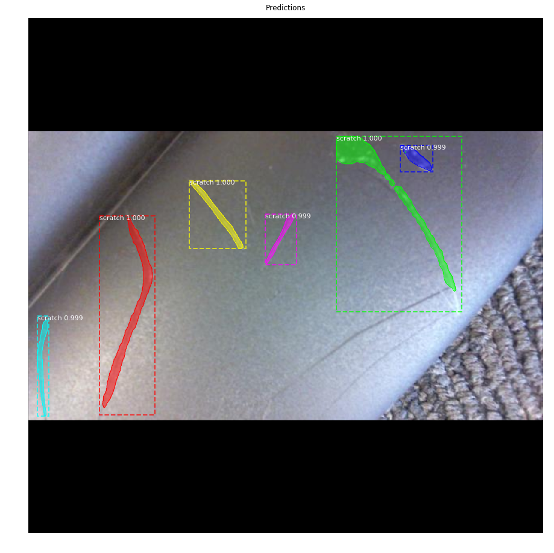
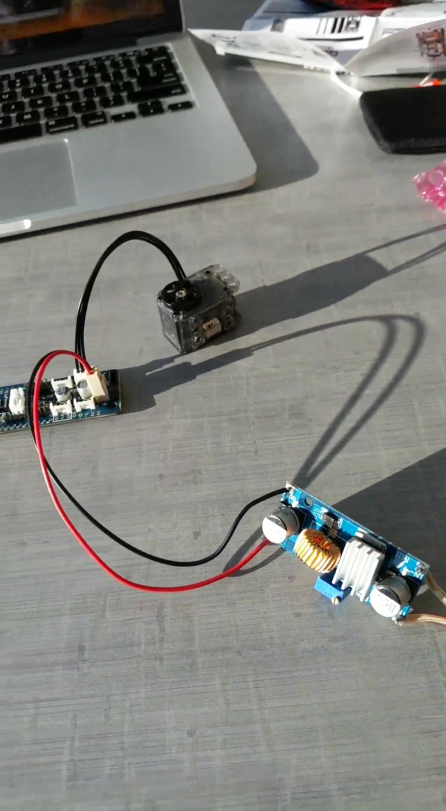
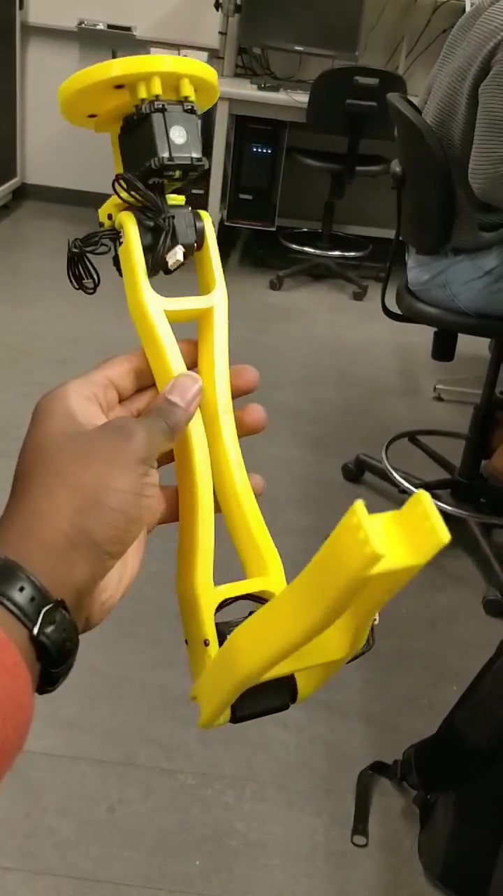
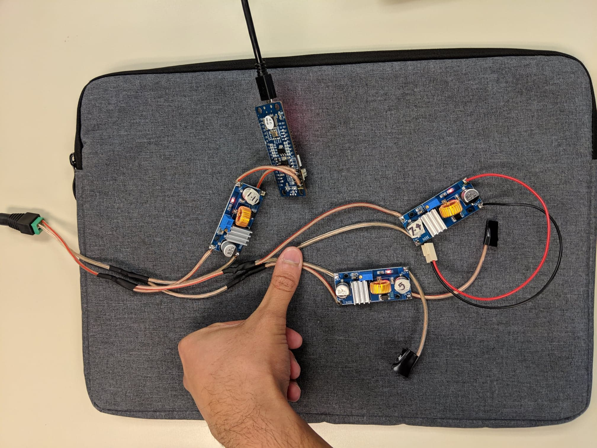
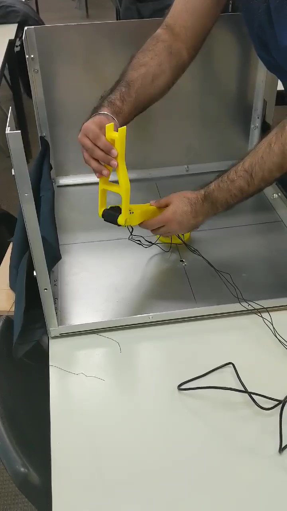

From Our Blog
The latest news about inspeksi.

Jan. 14 '19 Mohamed El Shatshat 1 min
Team Photo
Left to right - Toni, Herman, Mohamed, Lalit, Rey

Jan. 18 '19 Herman Grewal 5 min
Enclosure Redesigns
The material for the enclosure design is now sourced from the Engineering Machine Shop. Special thanks to

Jan. 21 '19 Mohamed El Shatshat 1 min
Lighting Developments
The Neopixel LED ring came in and is quite bright. It also fits over the camera nicely, allowing us to change our mounting strategy.

Feb. 3 '19 Rey Wiyatno 5 min
From Object Detection to Instance Segmentation
The algorithm used for the initial demo in the final design project was the object detection algorithm called the Single-shot Multibox Detector (SSD). The algorithm is now changed to instance segmentation model called the Mask R-CNN.

Feb. 5 '19 Lalit Lal 3 min
Establishing Communication with Dynamixel Smart Serial Servos
Communicating with the smart servos is a crucial stage in development to initiate the controls software development for moving the robotic arm in a confined space.

Feb. 17 '19 Oluwatoni Ogunmade 5 min
Robotic Arm Redesigns
Changes made to the initial design of the robotic arm after manufacturing and assembly to reduce the arm's weight and improve the strength.

Feb. 7 '19 Lalit Lal 3 min
Completing Electrical Assembly of Robotic Arm
The team is using various electronics that operate at different voltage levels. Since various parts communicate with each other, some interfacing and electronic design is required.

Feb. 24 '19 Oluwatoni Ogunmade 4 min
Recording arm positions and playback
Utilizing the back-driveability of the arms to allow positions to be recorded and played back.